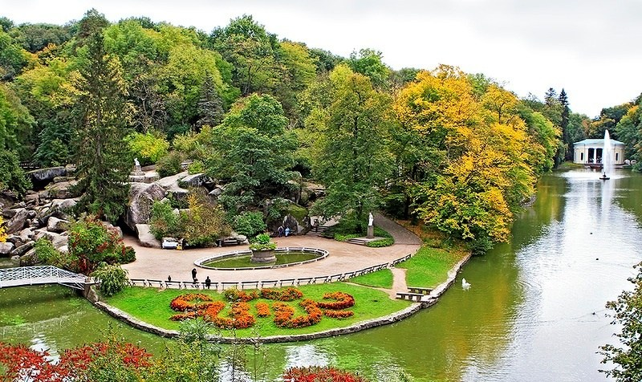
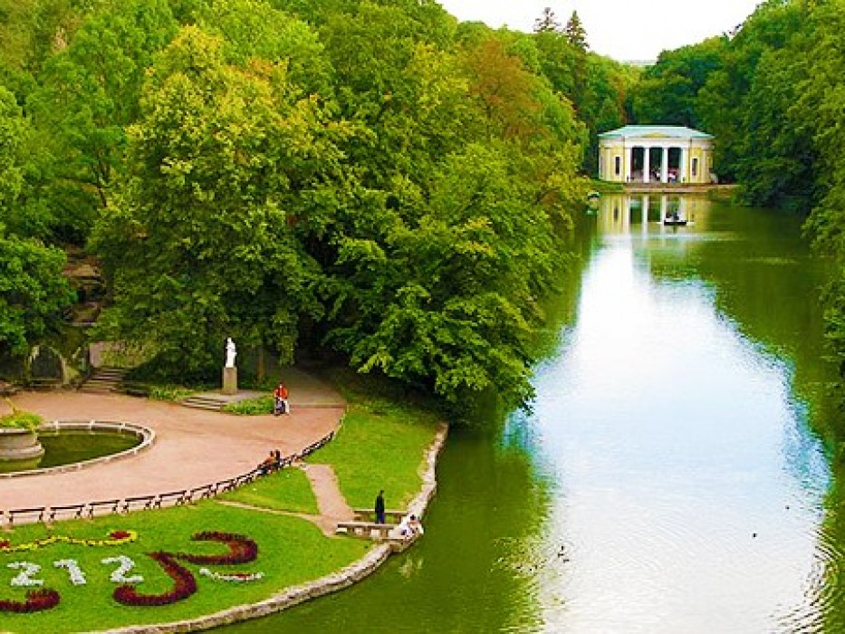
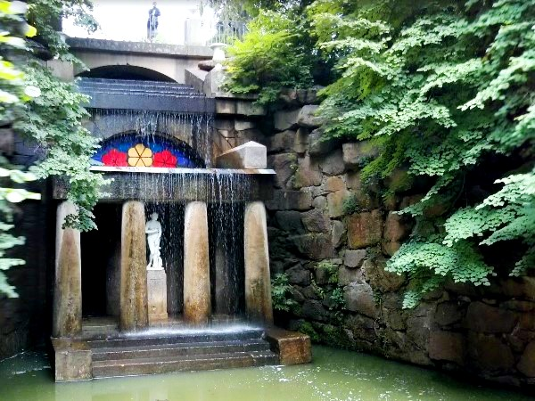

Численним відвідувачам дендропарк «Софіївка» відомий як туристична перлина України, музей садово-паркового мистецтва, місце, де можна поринути у казковий романтичний світ природи, краси і кохання…
Національний дендрологічний парк „Софіївка” – одне з найвидатніших творінь світового садово-паркового мистецтва кінця ХVІІІ – першої половини ХІХ ст. Парк розкинувся на площі майже 180 га на узбіччі старовинного міста Умань Черкаської області.
Заснував парк у 1796 р. польський магнат Станіслав Потоцький на честь своєї дружини красуні-гречанки Софії та подарував його у день її янгола, в травні 1802 р. Ідея створення парку в романтичному стилі з використанням римської і грецької міфологій належала самій Софії. Дивовижні пейзажі, екзотичні рослини, античні скульптури, водойми, каскади, фонтани, кам’яні гроти – все це гармонійно поєднується і створює неповторну атмосферу казки. Цей шедевр вражає відвідувачів своєю красою вже понад 210 років.
Втілювали задум архітектурного проекту народні майстри-умільці Уманщини – з 1796 по 1802 рр. копали ставки, підземну річку, споруджували водоспади й водограї, прокладали алеї, переносили велетенські гранітні брили, створювали із граніту та гіпсу художні прикраси для архітектурних споруд. У парку висаджували дерева місцевих порід та екзотичні рослини, завезені з різних країн світу. Прикрашали парк мармуровими статуями грецьких богів та богинь, філософів та поетів, виготовленими скульпторами Італії та Франції.
У парку навіть зберігся дуб, віком біля 400 років, – німий свідок багатьох подій, що відбувалися у цих місцях. За народними переказами, саме під цим дубом збиралися на наради з козаками легендарні українські ватажки Максим Залізняк та Іван Гонта.
Головна композиційна вісь парку проходить по річищу Кам’янки, де споруджено ряд штучних басейнів та ставів: Верхній став (понад 8 га), Нижній став (близько 1,5 га), водоспади (один з них 14 м висотою), шлюзи, каскади, підземну ріку Ахеронт (завдовжки 224 м), водограї (найбільший до 20 м) тощо.
Парк прикрашають штучні скелі (Левкадська Тарпейська й ін.), гроти (Венери, „Горішок”, „Страху і сумнівів” та ін.), павільйони (Флори, Рожевий), альтанки, скульптури.
Завдяки компонуванню різних дерев’яних порід, поєднанню їх з водоймами, скелями й архітектурними спорудами, створено види й перспективи різних планів – Головна алея, Англійський парк, Єлисейські поля та інші.
Старовинні алеї парку пам’ятають багатьох своїх відомих гостей – тут колись черпали своє натхнення Тарас Шевченко, Іван Котляревський, Володимир Сосюра, Максим Рильський, Олександр Пушкін…
Сьогодні, окрім екскурсій парком та музеєм, можна покататися на човні підземною річкою або на катамарані, проїхатися верхи або у кареті, у зимовий період – на лижах чи санчатах.
Туристичний сезон в Умані триває протягом усього року.